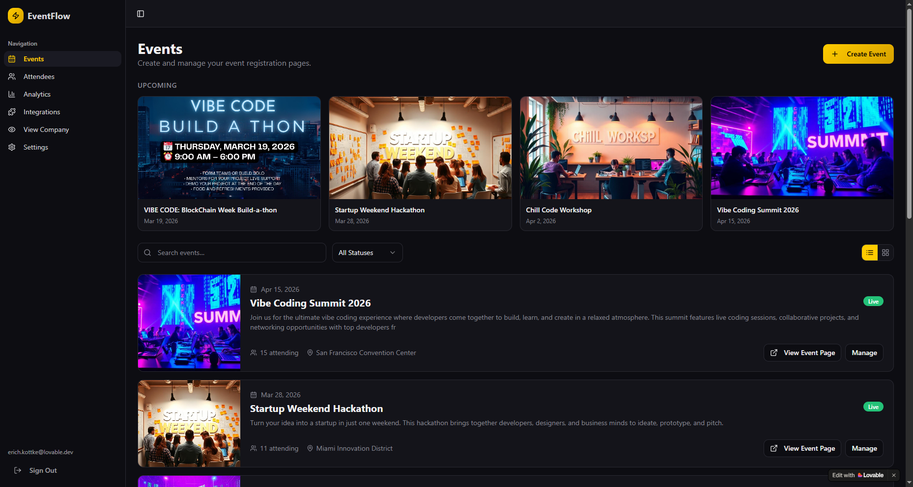

No framework on the landing page, so first load stays light.
Cloudflare native Roblox creation stack
Design, test, and ship 3D game ideas from one sharp workspace.
A fast landing, a clean login flow, and a BabylonJS viewport ready after sign in. Built as small modules so the project stays easy to extend.
0 deps
landing runtime
Edge API
Cloudflare Worker
BabylonJS
3D viewport

Selected
Crystal Gate
Mesh clean, 3 materials, 1 export queue
Small route modules with explicit JSON responses and CORS.
3D engine only loads on the app screen, not on marketing pages.
Workflow
From landing to live viewport in three clear steps.
Enter from landing
Clean product page with only the assets and scripts it needs.
Login through API
The frontend talks to a Cloudflare Worker route for auth.
Open 3D viewport
After auth, BabylonJS loads the studio canvas and scene tools.
Modules
Separated by purpose, not dumped into one file.
Frontend
Landing, login, viewport scripts, and CSS are split by screen.
frontend/scripts/viewport.js
Backend
Cloudflare routes, middleware, services, validators, and utils.
backend/src/routes/auth.ts
Shared contract
API payload names live in one place so frontend and backend agree.
shared/contracts/api.ts
3D viewport
BabylonJS scene setup stays isolated from auth and navigation.
frontend/scripts/viewport.js
Ready